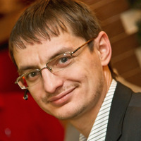

Company profile · РОЙ.МАРКЕТ investigation
ООО «Аркодим»
At a glance
Ownership & corporate history
Director
| Value | As of | Note |
|---|---|---|
| Соловьев Константин Юрьевич | 2022-05-20 | personal ИНН 166300088953; also sole founder; entity registered 2010 — one of the oldest in the whole registry [s0475] |
Products
«Братишка»
Tracked ground robot (UGV) for casualty/cargo evacuation, up to 150kg payload (people, ammunition, medical kits). PRESS-SOURCED ONLY (business-gazeta.ru profile of founder Барахтин А.В., not this entity's own site -- this entity has no confirmed website). In low-volume, volunteer/charity-funded production per the same source. Do not confuse with the SISTER company's own site, arkodimpro.ru (ООО «Аркодим-Про», a DIFFERENT ИНН, 1658146106, same founder) -- that site shows only civilian industrial robotics/CNC services, no military content.
State-program participation
- name_ru: Атлас промышленности ГИСП (Государственная информационная система промышленности); name_en: GISP (State Industrial Information System) Industrial Atlas — federal company-registry map layer; role: Company listed in the Ministry of Industry and Trade's official industrial-facility geodatabase, classified under industry '(unclassified)' with primary ОКВЭД 28.99.5 — independently corroborates the entity's ИНН/ОГРН/address/ОКВЭД via a second, unrelated federal data source (matches EGRUL exactly).; as_of: 2026-09-03 [s5346]
Intellectual property
Trademarks
| Mark | Reg. no. | Filed | Registered | Classes |
|---|---|---|---|---|
| — | 891689 | 20220330 | 12.09.2022 | 07 (UAV/defense terms present: дрон, летательн, воздушн, робот); 12 (автомобили беспилотные [автономные автомобили]; автомобили роботизированные; аппараты летательные; средства транспортные воздушные; средства транспортные для передвижения по земле, воздуху, воде или рельсам); 19 (материалы строительные неметаллические); 37 (строительство); 42 (разработка программного обеспечения) |
Patents
| Title | Reg. no. | Filed | Inventors |
|---|---|---|---|
| Промышленный робот-манипулятор | RU114291S | 2018.07.05 | Барахтин Артём Владимирович (RU), Зиганшин Ильшат Асгатович (RU), Соловьев Константин Юрьевич (RU) |
| Адаптивный рабочий элемент захватного устройства | RU172336U1 | 2017.02.03 | Соловьев Константин Юрьевич (RU) |
| ЭКСТРУДЕР СТРОИТЕЛЬНОГО ПРИНТЕРА | RU208483U1 | 2021.10.25 | Барахтин Артем Владимирович (RU), Соловьев Константин Юрьевич (RU) |
| СМЕСИТЕЛЬ ЭКСТРУДЕРА СТРОИТЕЛЬНОГО ПРИНТЕРА | RU209336U1 | 2021.10.25 | Соловьев Константин Юрьевич (RU), Барахтин Артем Владимирович (RU) |
| БАЛКА | RU213519U1 | 2022.04.19 | Соловьев Константин Юрьевич (RU) |
| УСТРОЙСТВО ДЛЯ РЕЗКИ ЦИЛИНДРИЧЕСКИХ ТОКОПРОВОДЯЩИХ ИЗДЕЛИЙ | RU214746U1 | 2022.09.21 | Зиганшин Ильшат Асгатович (RU), Соловьев Константин Юрьевич (RU) |
| ДИСПЕНСЕР ПАЛЛЕТ | RU216464U1 | 2022.11.18 | Зиганшин Ильшат Асгатович (RU), Соловьев Константин Юрьевич (RU) |
| Адаптивный рабочий элемент захватного устройства | RU2644608C1 | 2017.02.03 | Соловьев Константин Юрьевич (RU) |
| Промышленный робот-манипулятор с системой двойных энкодеров и способ его позиционирования | RU2696508C1 | 2018.08.31 | Климчик Александр Сергеевич (RU), Соловьев Константин Юрьевич (RU), Зиганшин Ильшат Асгатович (RU), Барахтин Артём Владимирович (RU) |
| ЭКСТРУДЕР СТРОИТЕЛЬНОГО ПРИНТЕРА | RU2782021C1 | 2021.10.12 | Соловьев Константин Юрьевич (RU), Барахтин Артем Владимирович (RU) |
| УСТРОЙСТВО ДЛЯ ОБВЯЗКИ ИЗДЕЛИЙ НА ПАЛЛЕТЕ | RU2793019C1 | 2022.11.18 | Соловьев Константин Юрьевич (RU) |
| УСТРОЙСТВО ДЛЯ ЗАХВАТА ШТАБЕЛЕЙ | RU2813430C1 | 2023.02.02 | Соловьев Константин Юрьевич (RU), Зиганшин Ильшат Асгатович (RU) |
Sanctions & screening
- 5 OCCRP Aleph match(es) (screened 2026-08-26).
Web & social presence
Website
- https://www.arkodimpro.ru/
From rk.2035.university's БАС-industry company directory (ИНН-confirmed match), s1165.
Principals & persons of interest

Барахтин Артём Владимирович
- co-inventor (patent RU114291S)
- co-inventor (patent RU2696508C1)
- co-inventor (patent RU208483U1)
- co-inventor (patent RU209336U1)
- co-inventor (patent RU2782021C1)

Соловьев Константин Юрьевич
Barakhtin Artem Vladimirovich
Барахтин Артем Владимирович- co-inventor (patent RU208483U1)
- co-inventor (patent RU209336U1)
- co-inventor (patent RU2782021C1)
Ziganshin Ilshat Asgatovich
Зиганшин Ильшат Асгатович- co-inventor (patent RU114291S)
- co-inventor (patent RU214746U1)
- co-inventor (patent RU216464U1)
- co-inventor (patent RU2696508C1)
- co-inventor (patent RU2813430C1)
Klimchik Aleksandr Sergeevich
Климчик Александр Сергеевич- co-inventor (patent RU2696508C1)
Open questions
- leader-id.ru self-reports (2026-08-24 sweep) show BOTH 50/50 co-owners as self-declared "Генеральный директор": Барахтин Артём Владимирович at employer "АРКОДИМ" (Казань) and Соловьев Константин Юрьевич at employer "ООО \"АРКОДИМ-Про\"" (Казань) -- a different name than this entity's own EGRUL-sourced director field (Соловьев, s0475). The brief prose already documents EGRUL showing four affiliated «АРКОДИМ» entities at the same Kazan addresses (АРКОДИМ-ПРО, АРКОДИМ+, АРКОДИМ-М, АРКОДИМ-2) alongside this one -- plausibly each self-report refers to a different entity within that group rather than a real conflict on this one, but not resolved -- would need a direct EGRUL pull on the whole affiliated group to sort out which of the two runs which entity.
Sources cited in this profile
| ID | Type | Locator | Captured | As of |
|---|---|---|---|---|
| s0475 | EGRUL extract | EGRUL extract (ul-1101690020959-20260823131713.pdf) | — | 2026-08-23 |
| s5346 | Gisp | Gisp (GISP_20260903_atlas-promyshlennosti-full-dump-40281-companies.json) | 2026-09-03 | 2026-09-03 |
Generated from this investigation's registry (data/registry/) by scripts/build_company_profile.py. Not a substitute for reading the underlying primary sources listed above.